← 返回阅读库 · 原论文目录
论文讲解阅读文档 · 表征学习 · v171
MixMAE & Mixed AE[2205.13137][2303.17152]
视频时长 00:14:15；讲解文字 6,261 字符；提取讲解画面 38 张。按视频原顺序阅读，每段文字保留时间戳。
文字来自整段视频的自动语音转写，按自然停顿分段，并与 PPT / 论文页面 / 演示画面对齐。未将讲解压缩为摘要；术语、数字和口述公式请结合画面及原论文核对。 阅读稿已校正规范部分明确术语误识别；原始逐字稿和每处修改记录另行保留。
讲解画面为源视频截图（640×360），不是可编辑 PPT 文件。全片按每秒 2 帧扫描内容变化，逐步展开页保留；连续动画保留代表画面。清晰度受源视频限制。
下载完整资料包 · 含离线 HTML、PDF、Word、全部 PPT 画面和字幕。
原论文与材料
Mixed Autoencoder for Self-supervised Visual Representation Learning · 下载完整 PDF（15 页）
MixMAE: Mixed and Masked Autoencoder for Efficient Pretraining of Hierarchical Vision Transformers · 下载完整 PDF（12 页）
按时间阅读
00:00:00–00:00:10 · 画面 001
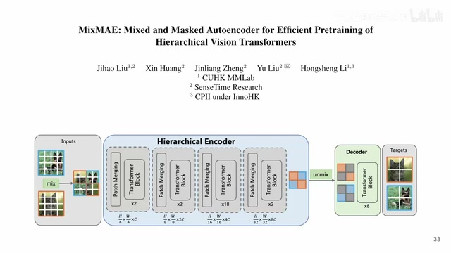
00:00:00–00:00:10 · 画面 001大家好啊，今天我们来快速水两篇论文。第一篇呢是这个 mix maemix and mask autoencoder for efficient pre-training of hierarchical vision transformers，那第二篇呢是这个 mix autoencoder for self-supervised visual representation learning 啊。本质上这两篇都是用了一个相同的思路，就是我在做这个 mae 的训练的时候呢，我不是一张图扔进去，我是把很多张图 mask 之后拼起来啊，然后扔进去。
00:00:10–00:00:34 · 画面 002
00:00:10–00:00:34 · 画面 002我们一起来做各自的 reconstruction，但是具体的实践呢，每一篇论文呢各有不同。我们先看第一篇啊，这一篇是很直接的，就是 Mix and Mask Encoder，原来呢叫这个 MixMIM，他后来改名叫这个 MixMAE。第一个东西，那么这个方法的核心呢，就是假如说我有两张图啊，他们两张图在一组。
00:00:34–00:00:44 · 画面 003
00:00:34–00:00:44 · 画面 00300:00:44–00:00:45 · 画面 004
00:00:44–00:00:45 · 画面 00400:00:45–00:01:25 · 画面 005
00:00:45–00:01:25 · 画面 005我们把每张图打成 patch 之后呢，我混合起来这样子呢拼成一张图之后它有的 patch 是第一张图的，有的 patch 是第二张图的，这样子拼成一张这么一个混合后的图，就是沿着这个 patch 做这个 crop mix，然后呢这样一个图送到这个 encoder 里面，做处理嘛处理完之后这个 token 呢在 mix就是我把各自的来自不中图的这个 token，再给它分别拎出来，拎出来之后然后填上这个 mask token然后分别做 decoder分别重建原图就可以了。
那么这个呢是这个文章的
00:01:25–00:01:26 · 画面 006
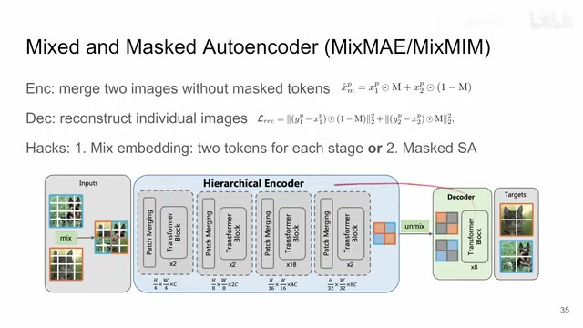
00:01:25–00:01:26 · 画面 006包括后面那个文章也是，
00:01:26–00:03:26 · 画面 007
00:01:26–00:03:26 · 画面 007它的核心就是我送到这个 MAE 训练的时候，不是一次只送一张图，而是两张图拼起来，一块他们去做这个 reconstruction，这是一个核心的思路。但是呢这篇文章呢区别于东南 MAE就是它用了一个 hierarchical encoder就是用了这个 Swin Transformer所以呢你可以看到随着这个它的层级的这个增加，它的这个 spatial resolution或者说就是它的 patch 的数量，整个这个 sequence 的长度就减小了这个是不同于 vit base
这个时候有朋友就说了，你的这个面积减小了，你最后这个 token 怎么算呢？对吧，你到时候一个 token 别是 mix 了两个来自不同图片的这个 token，它到底是算谁的 token 呢？那么作者为了从根源上避免这个问题，他一开始在混合的时候生成这个 mask 的时候就是按照最后这个三十二分之一的这个 resolution 来生成了这个 mask，所以呢就是经过这几次 merge 之后呢，它依然保证说这里的一个 token 它对应的全都是来自同一张图像的这个 token，这是一个小的设计。
当然你直接这样子一股脑子把所有的 token 都丢进去扔给我们的 transformer 去做，它实际上是很困难的，因为你实际上是混淆的，然后你要你的网络在这个混淆的信息里面去单独拎出来一种信息，这个其实是很困难的。为了解决这个困难，这里作者设计了两种方法来降低这个 reconstruction 的难度。那么第一种就是加这个 mix embedding。
具体来说就是在每一个 stage 里面添加两个 learnable 的 token，它就相当于加了两 classification token。我们期望我们期待的是每一个 token 它能够去注意到不同的 image，就还是红豆绿豆混在一起一锅炒，炒完之后倒到盘里来，红豆绿豆自然分开对吧，我们期望是这样一种状态，但实际上呢没有人能够给我们保证有这么一回事。那么这是第一种方法，那么第二种方法呢叫做这个 mask self-attention。
00:03:26–00:03:52 · 画面 008
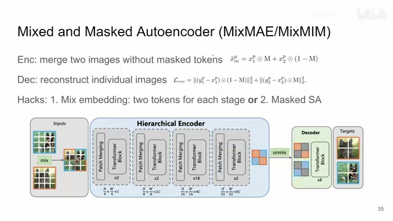
00:03:26–00:03:52 · 画面 008这个就更直接了就是我限制我的 self attention 因为在正常的 self attention 里面所有的 token 都是可以相互 attend 的相互注意的那么在这里我们限制一下只有来自同一张图像的这些 token 他们可以相互注意不同图像的 token 之间他们是不应该有 attention 的那么这个是第二个设计后来做着发现第二个设计效果是更好的
00:03:52–00:03:53 · 画面 009
00:03:52–00:03:53 · 画面 00900:03:53–00:03:58 · 画面 010
00:03:53–00:03:58 · 画面 010那么这个呢就是这一篇的一个核心的一个思路，那么我们来看这个结果，我就不说了啊，感兴趣的朋友自己去看一下原文中的各种实验，我更关心一下他的这个 ablation 啊，你看这里的这个 ablation 很有意思，就是啊，除了 mix，我用其他的东西来试试会怎么样呢？比如说这里我保留一张图，然后其他的这个空的位置呢，mask 的位置呢啊，都是填成了 0
00:03:58–00:05:18 · 画面 011
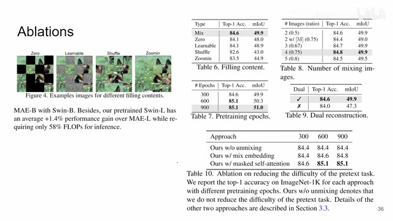
00:03:58–00:05:18 · 画面 011或者就是 learnable token 或者是啊把这原来图给它当换顺序啊等等等等这些这种操作你看到呢还是 mix 效果最好啊这是这个那么第二个呢就是这个 mask ratio 就是我究竟要拼多少张图你拼了你看你看这种是 ratio 是 0.5 的就是两张图对吧一张图取一半的 token 拼起来那这个呢就是 mask ratio 是 0.75那这就意味着两张图他们每张图都取了这个 0.25 那剩下 0.25 怎么办呢用这个 Mask Token 来替代那么还有呢就是三张图拼一起四张图拼一起五张图拼一起那么最后作者发现呢哎四张图拼起来的效果最好这个 0.75 呢也正符合这个原来 Masked Autoencoder MAE 那篇文章里面他找了这个 mask ratio 是一个很巧妙的事情
那么这边这个你训练越久，这个表现性能越好，那包括你两张图像同时重建，总比一张图像重建要好，对吧这种 ablation 都是很直接了当的。
00:05:18–00:05:19 · 画面 012
00:05:18–00:05:19 · 画面 012那最后一个呢
00:05:19–00:05:44 · 画面 013
00:05:19–00:05:44 · 画面 013就是我们之前作者介绍了有两种来降低它的 reconstruction 难度的方法一种是加这个 mix embedding另一种呢是这个 max mask self-attention对吧你看到 mask self-attention 效果最好然后呢这里作者还说我给它再上点难度对吧我把这个 unmixing 取消掉就是所有两张图的所有的 token都放到这个 decoder 里面让它去做重建那效果是怎么样的对吧那么这个是 ablation那总的来说呢
00:05:44–00:05:46 · 画面 014
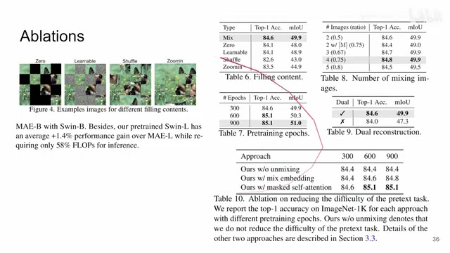
00:05:44–00:05:46 · 画面 014这一篇的这个思路大概就是这样
00:05:46–00:05:53 · 画面 015
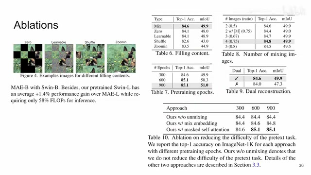
00:05:46–00:05:53 · 画面 015它是从这个 simple mim那篇文章的思路里面来然后呢把它应用到这个 mask auto-encoder 里面那然后我们再看第二篇
00:05:53–00:06:14 · 画面 016
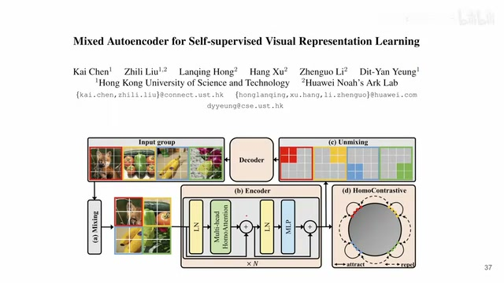
00:05:53–00:06:14 · 画面 016这一篇跟上一篇这一篇跟上一篇的思路非常像但是它的这个具体的方法就是完全不同的一个东西那你可以看到也是一开始呢我们还是对吧一组图片我们给它给它拼起来送到这个 encoder 里面但是呢作者这里加了一个额外的 loss我们来具体来看是怎么回事
00:06:14–00:07:37 · 画面 017
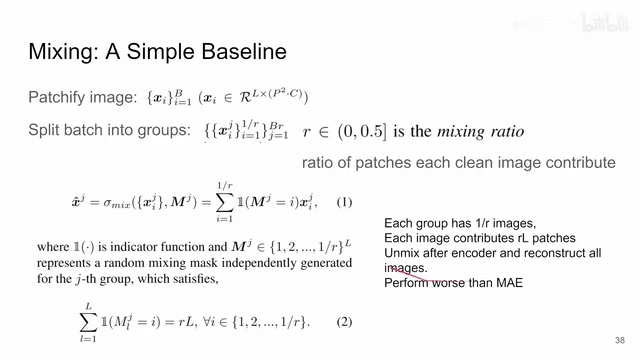
00:06:14–00:07:37 · 画面 017那首先啊我们还是一个基本的流程就是对吧我们跑一个最基本的 base 案嘛那我们把图像打成一个个的 patch然后呢我们把一组图像这里呢作者把一个 batch 的图像呢分成好多组每一组原始的图像呢根据这个 mixing ratio来产出一张图像这个 mixing ratio 是怎么回事呢就是你每张图片每张单独干净的图片它贡献多少比例的这个 token然后呢作者最终的目的还是我把所有的这个每张图片里面收集起来的 token都收集起来之后它们能够拼成一张完整的图片你不用看这边数学表示啊
这么复杂甚至有些 confusing但是呢实际它的原理就是我定一个这个 ratio定好了之后然后呢我的一个组里面我就会有我就会有这个 R 分之一张图片那每张图片呢贡献一个 R 乘 LL就是 patch 的总数那每张图片呢贡献这么多 patch那么你有这么多张图片啊，最后出来的这个尺寸的结果呢，就还是 L 个 token，那然后呢，这个 L 个 token 呢送到这个 Vision Transformer 里面啊，这里是 Vision Transformer，不是那个 Swin Transformer 啊，这是一个标准的 VIT，然后呢，最后呢再过这个 Decoder，再重建每张图像就好了，它的 Pipeline 是这样的，但是呢，这么直接的设计啊，这种 Simple Baseline 啊，它是不 work 的啊，它是比这个 MAE 还差的，那怎么回事呢
00:07:37–00:07:40 · 画面 018
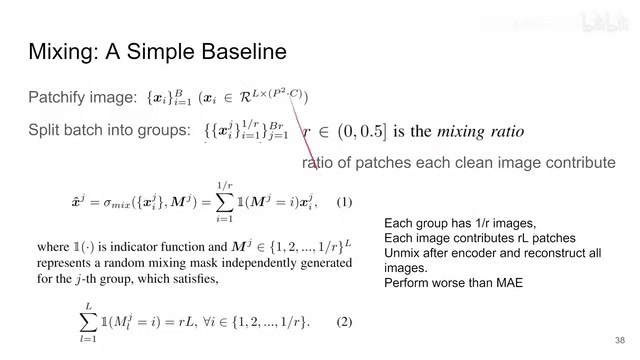
00:07:37–00:07:40 · 画面 01800:07:40–00:07:43 · 画面 019
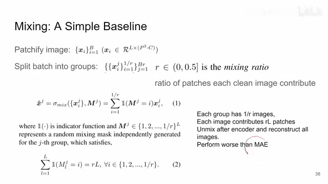
00:07:40–00:07:43 · 画面 019那作者认为说在我们混合的过程中啊我们无意之中提升了这个混合后的这个图像和我们原始的这个要重建的这个目标图像他的这个 mutual information 啊他这种设计两张图像混合起来比这个 MAE 的 mutual information 是要高的啊这里我们假设有两张图像做混合这里呢作者给出了一个证明
00:07:43–00:09:43 · 画面 020
00:07:43–00:09:43 · 画面 020我们假设对吧这个 MAE 这个东西它呢实际上是 X1 和一个 0 的这么一个混合那根据我们一开始混合这个定义我们来写对吧它这是 X1 和 X2 混合根据 mutual information 它的定义这是 X1 的这个 entropy 这是 X1 和这个混合项的这个 cross entropy 在这里那然后呢我们为了凑 MAE 的形式对吧我们把这个 0给它加上这里作者有一步是一个稍微有一点争议的操作就是作者假设说我们的 X1 和 X2 它们两个样本是相互独立的相互独立的那么你这一个条件
这不是条件是四项的和吗你可以把这一个条件拆成这两项的和还有这两项的和对吧就把它拆开了这也就变成逗号了不是加号了这相当于就是变成两个条件了然后才有了后面这些推导但是作者也说对吧你实际上 X1 和 X2 它真的独立吗它如独立因为你中间做 VIT 的时候它有 attention 对吧这是标准的 attention 你中间还有 classification token 它们之间是有信息交互的所以这个地方他能不能这么做呢我们是要打个问号的当然作者又说了如果我们继续增加图像的数量我们可以把它理解成 XR 它不再是单独的一个 XR 而是很多张图像除了 X1 之外混合成的一个图像然后这张图像混合好了之后再跟 X1 它是不是又是独立的又是说这个式子又可以这么做呢所以我说它是一个如独立的这么一个东西它不是一个有形的所以你读原始的论文最终我们也没有一个结论包括 Mutual Information 到底对我们的任务有什么影响
00:09:43–00:09:47 · 画面 021
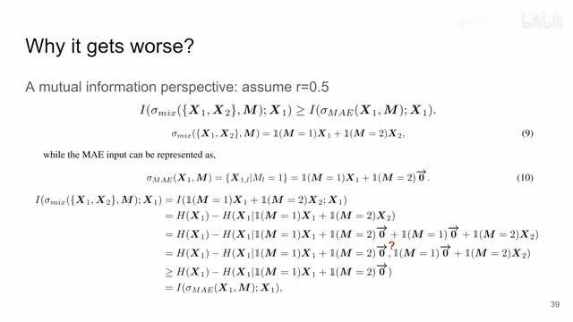
00:09:43–00:09:47 · 画面 021我们只能说作者做了这方面的尝试那么然后我们还是就往下看
00:09:47–00:10:48 · 画面 022
00:09:47–00:10:48 · 画面 022作者为了让这个东西真正的能 work他做了一些工作就是引入了这个 homologous recognition他是怎么回事你想我们在上一篇作者利用已知的知识就是用这个 self-attention mask self-attention就是把同一张图片的 token 给他选起来他们之间才能做 attention那么在本篇文章里面作者并不打算用这样的知识作者希望能用这个网络自己去发现哪些 token他们是应该值得相互注意的哪些 token 是不可以相互注意的那怎么发现呢这里 attention
homologous attention就是我去量他的 attention 的值这个 query 和 key 的 attention 的值所有的 token 之间量一遍然后排序我最终只取 top k就是前 k 个 attention 值我来保留下来那剩下的这些就不做 attention 了这个就是 homologous attention那作者把这个东西替换掉了原来 vit 里面所有的 attention layer除了最开始的那一层
00:10:48–00:10:49 · 画面 023
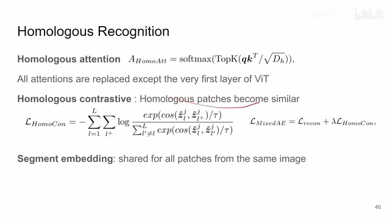
00:10:48–00:10:49 · 画面 02300:10:49–00:11:36 · 画面 024
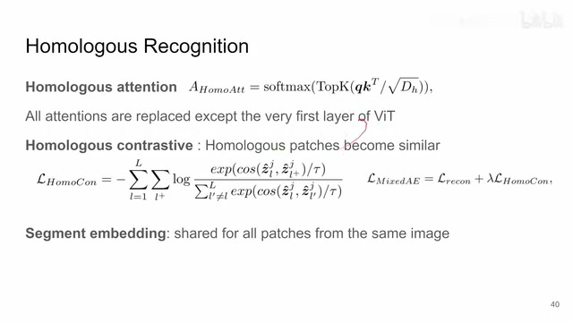
00:10:49–00:11:36 · 画面 024这是第一个改动那么第二个改动呢就是这个 Homologous Contrastive 这是额外增加了一个 Loss 那它的原理跟上面是一脉相承的就是我们希望来自同一张图像的我们假定它们来自同一张图像我们其实并不知道它们来自同一张图像我们只是希望这些图像它们的 Token 变得相似我如何确切的表达这个希望呢我单独加一个 Loss 来做这个事情那具体的做法就是我选出来的认为是在来自同一张图像的这个 token 这些 patches 我们把他们的过一个 linear layer 的投影投出来这个 representation 我们让它相似那相对的如果两个 patch 我认为它不属于同一张图像那它的这个相似度呢就降低一点
这个是经典的 contrastive learning loss，我们之前说了很多遍了，这个就是组成了 homologous contrastive loss，然后这个 loss 以 0.1 的系数加到 reconstruction 的 loss 上面，这个就是本文最终的 loss 的一个集合，那么此外，为了进一步的降低任务的难度，作者还是加了一个 segment embedding，也就是说，我给来自同样一张图片的
00:11:36–00:11:40 · 画面 025
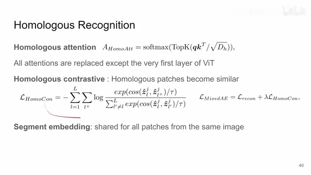
00:11:36–00:11:40 · 画面 02500:11:40–00:11:48 · 画面 026
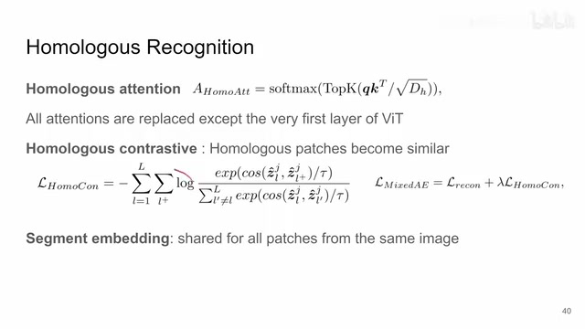
00:11:40–00:11:48 · 画面 02600:11:48–00:11:53 · 画面 027
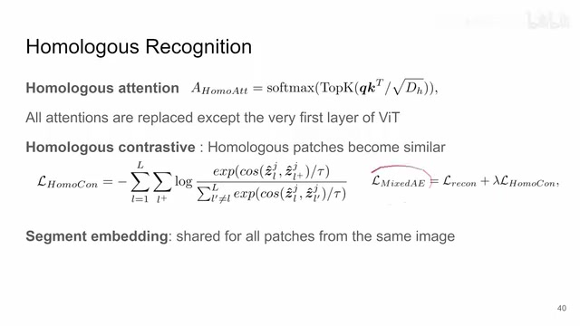
00:11:48–00:11:53 · 画面 02700:11:53–00:12:09 · 画面 028
00:11:53–00:12:09 · 画面 028这个所有的 token 加上一样的这个 embedding 它跟 positional embedding 一样嘛只不过我再加了一个 embedding 用它呢来区分不同的这个图片那么这个呢是本文作者的这个设计就是为了让这个东西 work 他先改动了这些东西那么此外呢其实还存在另一种设计的取舍
00:12:09–00:12:11 · 画面 029
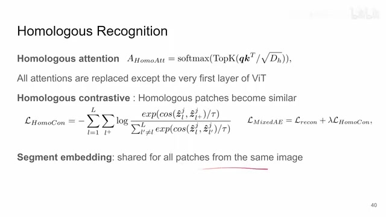
00:12:09–00:12:11 · 画面 02900:12:11–00:12:16 · 画面 030
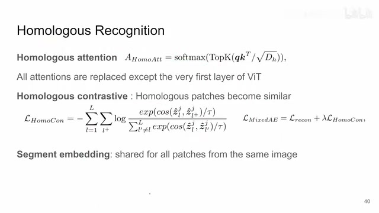
00:12:11–00:12:16 · 画面 03000:12:16–00:12:50 · 画面 031
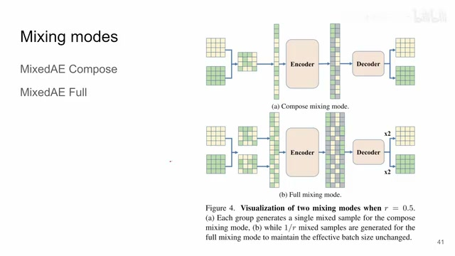
00:12:16–00:12:50 · 画面 031那比如说这里我是两张图像我拼成了一张送到 encoder decoder 重建恢复出两张图像来还是说我充分利用了这个 mask 对吧我拼出两张来就是同样的一个位置这张呢用第一张图像那这张呢用第二张图像啊对吧因为这样子就有两张嵌合的这个 mix 过的把这两张图像送到这个 encoder 里面那最后呢重建出四张这个图像来啊这个这个模式呢叫这个 mix ae4 这是两种模式不同的设计的取舍那么以上呢就是本文重要的这个技术实现了那么下面我们来看具体的结果
00:12:50–00:12:51 · 画面 032
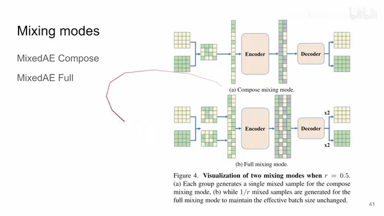
00:12:50–00:12:51 · 画面 03200:12:51–00:12:54 · 画面 033
00:12:51–00:12:54 · 画面 03300:12:54–00:13:32 · 画面 034
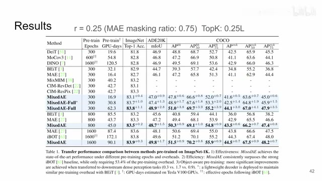
00:12:54–00:13:32 · 画面 034首先在实际的操作中作者还是发现这个 ratio 取到 0.25 效果是最好的跟这个 MAE 原始的这个 0.75 是对应的那 0.25 也就意味着你有四张图像跟上一篇文章一样也是四张图像它们合在一起拼成了一个大图像送到 encoder 里面然后呢这个 topk 也选择的是 0.25 倍的这个 token 的长度因为你一张图片就是贡献了 0.25 倍的这个 token 的数量对吧所以它 topk 也选这个也是一个合理的取舍那么这是一些数字，现在具体的你看一些 default，就是我们刚刚说的不同的这个 mix 这个 design choice，它是不一样的。感兴趣的朋友呢还是引到原文中看一下。那像其他这种 classification task 对吧，大家也是看一下。那最后的这些 application 呢，就是你不同的这个设计了，可以说讨论的是很详细了。总的来说呢，这一篇呢跟第一篇他们的思路上是十分甚至有九分相似的。
00:13:32–00:13:36 · 画面 035
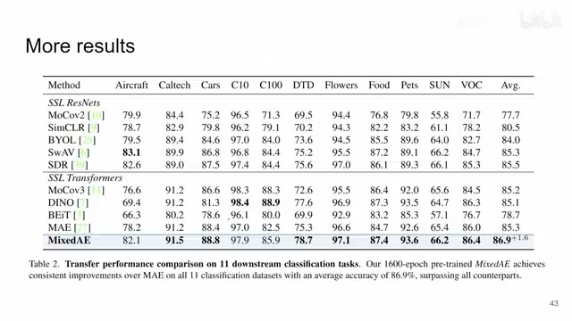
00:13:32–00:13:36 · 画面 03500:13:36–00:13:37 · 画面 036
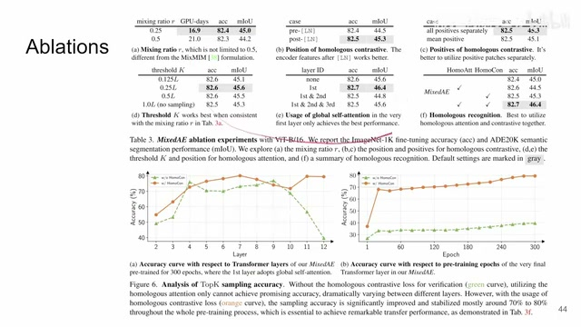
00:13:36–00:13:37 · 画面 03600:13:37–00:14:15 · 画面 037
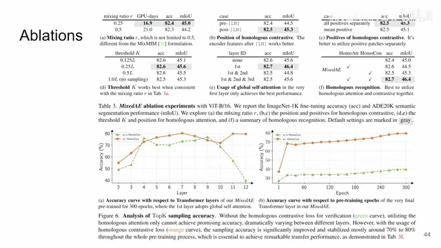
00:13:37–00:14:15 · 画面 037只不过第一篇用了 Swin Transformer，那当然注意这里我说第一篇第二篇只是我在这个视频中介绍的顺序，并不是说他们真正发表的顺序啊，因为这两组作者之间肯定是有交流的，那么这一篇呢通过更改 attention，通过加上 positional embedding，通过引入这个 homologous recognition，这个引入了一个新的 loss，在这个保留 vision transformer 的基础上，把这个性能给做上来好了，那么以上就是我对这两篇文章的一个快速的整理啊，那么感谢您的收看，再见
00:14:15–00:14:15 · 画面 038
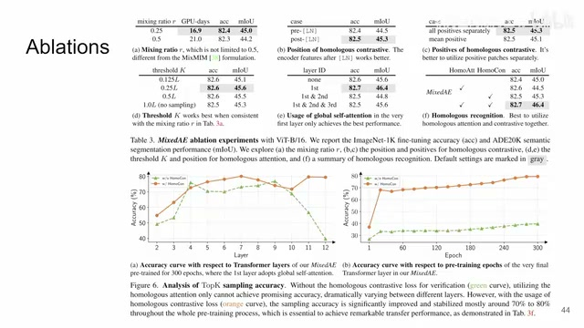
00:14:15–00:14:15 · 画面 038转写与来源说明 · 3 个自动复核提示
保留 189 个原始语音片段，3 个片段触发自动复核提示。提示仅用于定位可能的术语、重复或识别问题，不等于已确认错误。
讲解画面为源视频截图（640×360），不是可编辑 PPT 文件。全片按每秒 2 帧扫描内容变化，逐步展开页保留；连续动画保留代表画面。清晰度受源视频限制。
原视频：paper/合集_2026-10-16_表征学习/[论文简析]MixMAE & Mixed AE[2205.13137][2303.17152].mp4
SHA-256：06e82263ef583472182296bc1e9575ce161fe3955b165841323c82f22b48123e
是这个 max mask self-attention
mask self-attention
homologous attention
全文按视频语音与画面制作。原论文可从上方链接下载；完整资料包保留全文、原始逐字稿、字幕和校对记录。